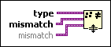

Assert Structural Type Mismatch Function
Owning Palette: Assert Type VIs and Functions
Requires: Base Development System
Breaks the calling VI if type is the same data type as any of the mismatch inputs, ignoring type definitions and type names.
This function does nothing at run time. Use this function in conjunction with the Type Specialization structure to customize sections of code in a malleable VI (.vim) for specific data types or to force a malleable VI to decline specific data types.

 Add to the block diagram Add to the block diagram |
 Find on the palette Find on the palette |